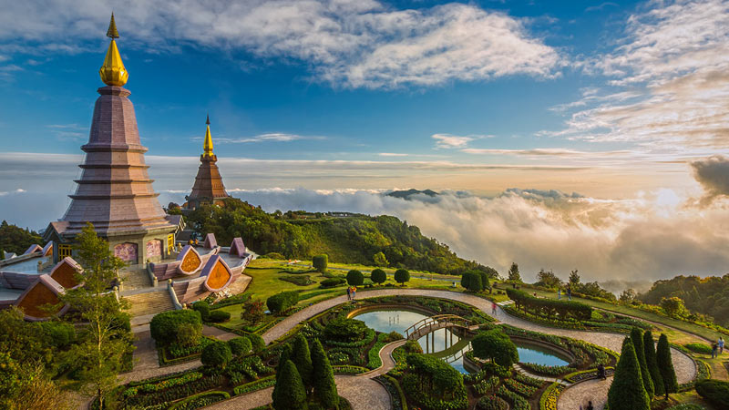

Summer Activities Blog
Summer is a time for relaxation, adventure, and making memories. Here are three ideas to get your summer fun started!
Great destination to travel
Below are the best countries that you should spend time when confusing where is your destination:
- Vietnam
From its bustling cities to its serene countryside, Vietnam offers a diverse range of experiences for travelers.

- Thailand
It is a Southeast Asian country known for its stunning beaches, delicious food, vibrant culture, and friendly people.

- Switzerland
Switzerland beckons with snow-capped peaks, charming villages, and a rich cultural tapestry, offering adventure for all seasons.
Places to Hike in Canada
Explore the great outdoors this summer by hiking in these breathtaking locations:
- Lake Louise and Moraine Lake - Alberta
- Fundy Footpath - New Brunswick
- Cape Breton Highlands National Park - Nova Scotia

How to make lipton milk tea
Craving milk tea? Whip up your own delicious treat at home!
Who says you need a fancy shop to enjoy delicious milk tea?
Here's a simple guide to crafting this delightful treat at home.

Ingredients:
- 1 Lipton tea bag
- 250ml (1 cup) hot water
- 100ml (1/2 cup) milk
- 2 tablespoons sugar (adjust to taste)
- Ice cubes (optional)
Instructions:
- Steep the tea: immerse the Lipton tea bag in the hot water for 3-5 minutes,
or until the tea reaches your desired strength.
- Sweeten the tea: remove the tea bag and stir in the sugar until it dissolves completely.
- Combine with milk: pour the sweetened tea into a glass or mug filled with ice cubes (if using).
Add the milk and stir gently to combine.
- Adjust and enjoy: taste the milk tea and adjust the sugar or milk quantity to your preference.
Enjoy your homemade Lipton milk tea!